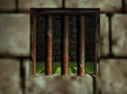

Mayahem Temple is a bla bla bloo level with tons of bibble dibble dorf. It's fun.
General TricksPillars
Prison Compound Code

The Prison Compound's code is a 5-digit code randomly selected from 3 possible codes, and is different each playthrough. Normally, the code is obtained by talking to the Stony at the entrance to the Compound as the Stony Banjo transformation. However, it's faster to simply enter the codes in a sequence.
Stadium Early